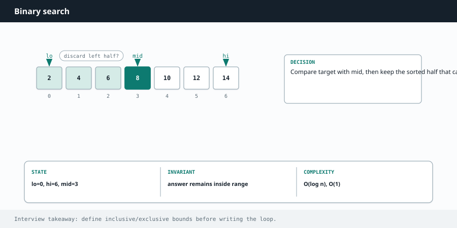

Competitive Programming
Chapter 07
Binary search

If your data is sorted, you never need to check every element. Look at the middle. If it is too small, throw away the left half. If it is too big, throw away the right half. Each step halves what is left, so even a billion items take only about thirty checks. step 1: look at the middle 1 3 5 7 9 11 13 mid=7, target 11 > 7 step 2: keep only the right half 9 11 13 mid=11, found it Each comparison discards half the remaining elements. That is why it is O(log n).
R E A C H F O R B I N A R Y S E A R C H W H E N Y O U S E E
A sorted array plus "find X" or "find the position where X would go." Also the sneaky version: "find the smallest value that satisfies some condition" or "minimize the maximum." If you can phrase the problem as "is a candidate answer good enough, yes or no," and the yes/no flips at one point, you can binary search on the answer itself even when there is no array to search.
The classic template
Keep two bounds, lo and hi . Look at the middle. Move whichever bound is wrong. The one detail people get wrong is computing the middle safely and updating the bounds so the loop always shrinks.
def binary_search(nums, target):
lo, hi = 0, len(nums) - 1
while lo <= hi:
mid = (lo + hi) // 2 # middle index
if nums[mid] == target:
return mid
elif nums[mid] < target:
lo = mid + 1 # answer is to the right
else:
hi = mid - 1 # answer is to the left
return -1 # not found
int binarySearch(int[] nums, int target) {
int lo = 0, hi = nums.length - 1;
while (lo <= hi) {
int mid = lo + (hi - lo) / 2; // avoids integer overflow
if (nums[mid] == target) return mid;
else if (nums[mid] < target) lo = mid + 1; // go right
else hi = mid - 1; // go left
}
return -1;
}
C O M P U T E M I D W I T H O U T O V E R F L O W
In Java, (lo + hi) / 2 can overflow when both are large, because the sum exceeds the max int . Write lo + (hi - lo) / 2 instead. Python integers never overflow, so either form is fine there, but the habit is good.
Binary search on the answer
This is the version that separates people who "know binary search" from people who really get it.
Example: you must ship packages within D days, and you choose a daily capacity. Bigger capacity finishes faster. You want the smallest capacity that still finishes within D days.
There is no array to search. But the space of possible capacities is a sorted range, and "can we finish in D days with capacity C?" is a yes/no question that becomes yes once C is large enough. So binary search on C.
def ship_within_days(weights, days):
def can_do(cap):
needed, load = 1, 0
for w in weights:
if load + w > cap: # start a new day
needed += 1
load = 0
load += w
return needed <= days
lo, hi = max(weights), sum(weights) # smallest and largest sane
capacity
while lo < hi:
mid = (lo + hi) // 2
if can_do(mid):
hi = mid # mid works, try smaller
else:
lo = mid + 1 # mid too small, go bigger
return lo
int shipWithinDays(int[] weights, int days) {
int lo = 0, hi = 0;
for (int w : weights) { lo = Math.max(lo, w); hi += w; }
while (lo < hi) {
int mid = lo + (hi - lo) / 2;
if (canDo(weights, days, mid)) hi = mid; // works, try smaller
else lo = mid + 1; // too small, go bigger
}
return lo;
}
boolean canDo(int[] weights, int days, int cap) {
int needed = 1, load = 0;
for (int w : weights) {
if (load + w > cap) { needed++; load = 0; }
load += w;
}
return needed <= days;
}
W A T C H O U T
Mixing up the loop condition and the update is the classic infinite loop. If you use while lo < hi with hi = mid , you must pair it with lo = mid + 1 , or the range may never shrink. When in doubt, trace a two-element case by hand to be sure the window always gets smaller.
Deeper Intuition
Why you can search the answer, not just the array
Binary search needs one thing: a way to look at the middle and confidently throw away half. In a sorted array a comparison gives you that. But the same trick works on the space of possible answers whenever a yes or no test is monotonic, meaning once some value works, every larger value also works. Then you binary search for the smallest value that works. Spotting that hidden monotonic property is what unlocks a whole class of hard problems. candidate answers, feasibility flips from no to yes exactly once 1 2 3 4 5 6 7 8 first yes red = does not work, green = works. Binary search the boundary.
When a yes or no test flips once as the value grows, you can binary search for the boundary.
Another worked example: Koko Eating Bananas
Koko picks an eating speed and must finish all piles within a number of hours. A faster speed always finishes in the same or fewer hours, so feasibility is monotonic. Binary search the smallest speed for which the hours needed still fits the limit.
def min_eating_speed(piles, hours):
def hours_needed(speed):
return sum((p + speed - 1) // speed for p in piles) # ceil divide
lo, hi = 1, max(piles)
while lo < hi:
mid = (lo + hi) // 2
if hours_needed(mid) <= hours: # mid works, try slower
hi = mid
else:
lo = mid + 1 # too slow, go faster
return lo
int minEatingSpeed(int[] piles, int hours) {
int lo = 1, hi = 0;
for (int p : piles) hi = Math.max(hi, p);
while (lo < hi) {
int mid = lo + (hi - lo) / 2;
long need = 0;
for (int p : piles) need += (p + mid - 1) / mid; // ceil
if (need <= hours) hi = mid; // works, try slower
else lo = mid + 1; // too slow
}
return lo;
}
Going Deeper
What kinds of problems this solves
U S E T H I S P A T T E R N F O R
Searching sorted data, finding the first or last position that satisfies a condition, and the powerful trick of searching over an answer space when the answer has a yes or no property that flips once as the value grows.
| Problem type | Classic examples |
|---|---|
| Classic and boundaries | Binary Search, Search Insert Position, Find First and Last Position, Find Peak Element |
| Rotated and 2D | Search in Rotated Sorted Array, Find Minimum in Rotated Sorted Array, Search a 2D Matrix |
| Search on the answer | Koko Eating Bananas, Capacity To Ship Packages Within D Days, Split Array Largest Sum, Minimum Number of Days to Make Bouquets |
The algorithm, in a bit more detail
Binary search keeps a range that is guaranteed to contain the answer and halves it every step. The trick is the invariant: you must be able to look at the middle and confidently throw away one half. In a sorted array that is easy, since a comparison tells you which side the target is on.
Search on the answer is the version that unlocks hard problems. Instead of searching the array, you search the range of possible answers, say the smallest eating speed or the smallest ship capacity.
You write a helper that asks "does answer x work", which must be monotonic: if x works, everything bigger works too. Then you binary search for the smallest x that works. Recognizing that hidden monotonic property is the whole skill.
Variations you will run into
You will meet leftmost and rightmost variants (lower bound and upper bound), where a match does not stop the search but nudges a boundary to keep looking. Rotated arrays add one comparison to
decide which half is sorted. The answer space version replaces the array comparison with a feasibility check.
Edge cases and gotchas
Compute the middle as low plus half the gap, not low plus high divided by two, to avoid integer overflow in Java.
Match your loop condition and your boundary updates, since a wrong pairing causes an infinite loop or a missed answer.
For first and last position, do not return on the first match, keep shrinking toward the side you want.
Double check whether your interval is inclusive on both ends, since that decides less than versus less than or equal.
S T E P B Y S T E P
Searching for 7 in the sorted array [1, 3, 5, 7, 9, 11]. Each step throws away half of what is left.
| low | high | mid | value at mid | action |
|---|---|---|---|---|
| 0 | 5 | 2 | 5 | 5 is below 7, search right, low = 3 |
| 3 | 5 | 4 | 9 | 9 is above 7, search left, high = 3 |
| 3 | 3 | 3 | 7 | 7 equals target, return index 3 |
Interview drill — Binary search
State the invariant every iteration — that is the interview.
More drills in the Interview Lab.
Q1. Search in Rotated Sorted Array
Find target in rotated sorted array.
Find which half is sorted; if target in that half, search there, else the other.
Q2. Find Minimum in Rotated Sorted Array
Minimum element after rotation.
Compare mid to hi: if nums[mid] > nums[hi], min is right; else mid or left.
Q3. Koko Eating Bananas
Min speed to finish in h hours.
Search speed in [1, max(pile)]; feasible if Σ ceil(pile/speed) ≤ h.
Q4. Median of Two Sorted Arrays
Median in O(log(m+n)).
Binary search partition on smaller array so left count is correct and max(left) ≤ min(right).
Q5. Time-Based Key-Value Store
get(key,t) → latest value with time ≤ t.
Per key, list of (time,value) ascending; bisect rightmost ≤ t.